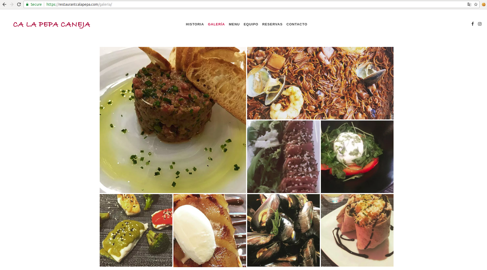

Ca la Pepa Restaurant Web
Stunning visual design
Ca La Pepa is a Website to promote the restaurant that holds the same name, in the beautiful town of Palamos, Catalonia, Spain. The Web intended to be visually stunning in order to attract new customers.
Team
Oscar Miras
Lara Berguio
Role
Full Web development
Professional photography
 View Landing Page
View Landing Page